| 日付 | 2025年2月1日（土） - 2025年2月2日（日） |
|---|---|
| メンバー | 家族（妻、長女・13歳、長男・11歳） |
| アクセス | 車 |
子供たちが塾で忙しいので、今年の冬はスキー旅行1回。
場所は昨年同様、苗場エリアにし、苗場スキー場近くのかぐらスキー場に行ってみることにする。
1日目
かぐらスキー場に向かったがなんと満車。1200台停められるはずなのだがすごい人気だ。
仕方なく初日は苗場スキー場で滑ることにする。

最初はリフトに乗って緩斜面を滑ることにする。
霧氷が美しいが背景が青空でないとあまり映えない。
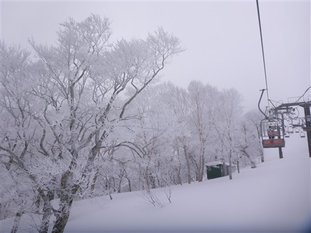
緩斜面で慣らしたらゴンドラに乗って高度を稼ぐ。
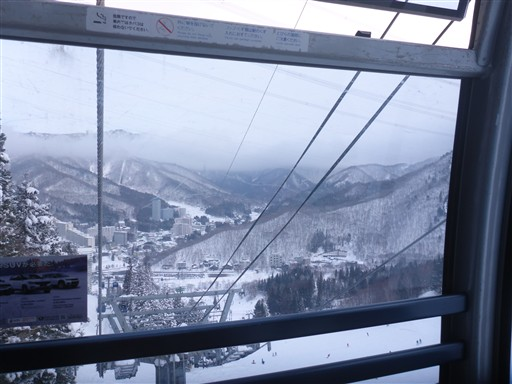
正面に見えるのは平標山。本日はあまり天気が良くない。
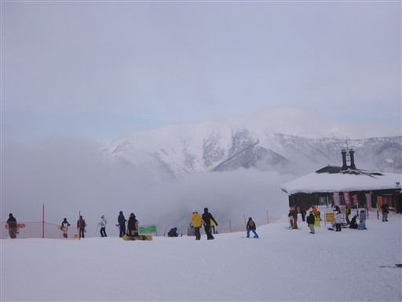
15時を過ぎると、次々とゴンドラやリフトが停止していく。
ちょっと店じまいが早すぎる。
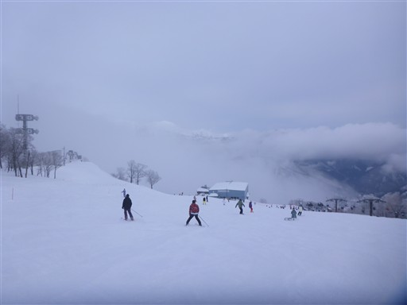
本日の宿、山乃湯に移動。
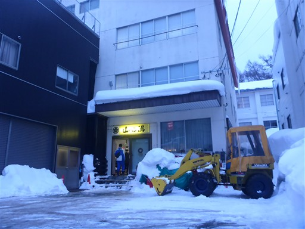
隣の建物は除雪されておらず雪に埋もれている。今にも雪が上から落ちてきそうだ。
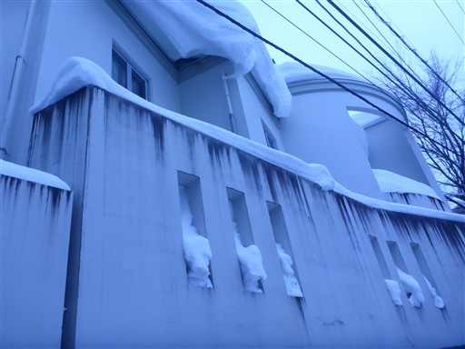
2日目
本日は朝一でかぐらスキー場に向かう。無事駐車場に車を停めることができた。
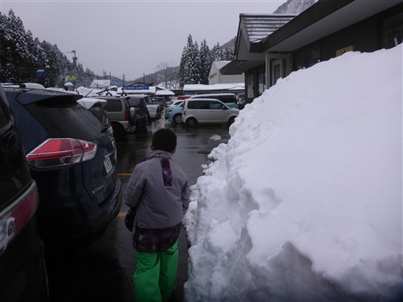
このスキー場は、まず最初にロープウェイに乗る必要がある。
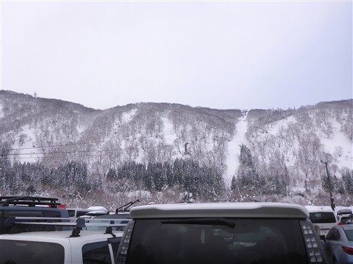
チケット購入も、ロープウェイも結構、混雑している。
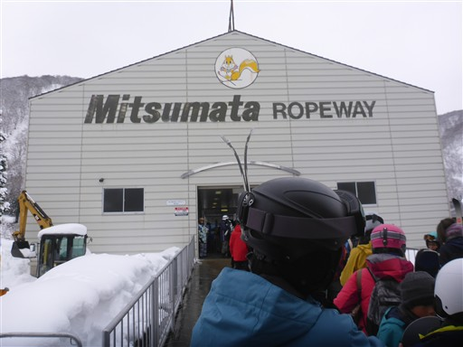
ロープウェイ、リフト、ゴンドラと乗り継いで上部のエリアに行く。
かなり標高の高いスキー場で、その分雪質がよさそうだ。
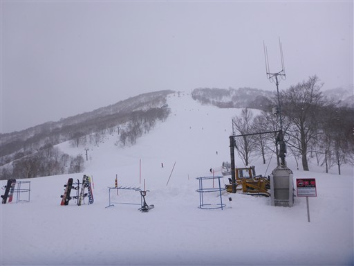
いくつかのリフトは上からカバーを被せることができる。
風や雪を防げて快適だ。
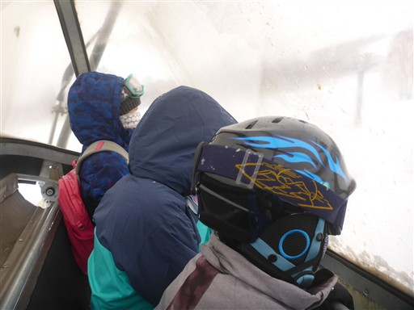
カバーには雪の結晶が次々と付着していく。
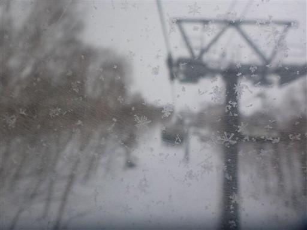
もともと3つのスキー場だったのが合体してできたスキー場なので、敷地は広大。
一度、田代エリアの方に滑って行ってみる。目の前に見えるのは田代湖。
ものすごく寒そうな景色だ。
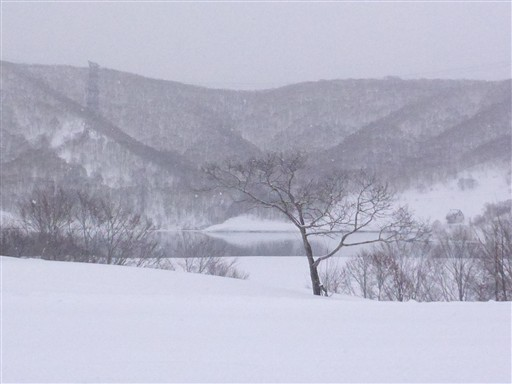
様々なコースを滑る。一番高い所まで行くリフトは上級者コースしかないため、今回は自重。
このスキー場は全体的に難易度の高いコースが多い。
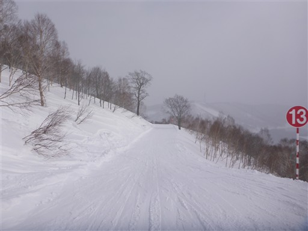
上から田代湖を見下ろす。苗場山麓につくられたダム湖だ。
苗場スキー場は実際は苗場山からは離れていて、苗場山にあるスキー場はこちらのかぐらスキー場だ。
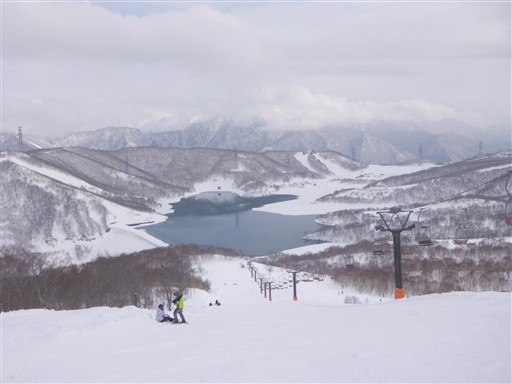
雲がフィルターの役割をはたしていて、丸い太陽が見える。
スキー場ではよく見かける景色だ。
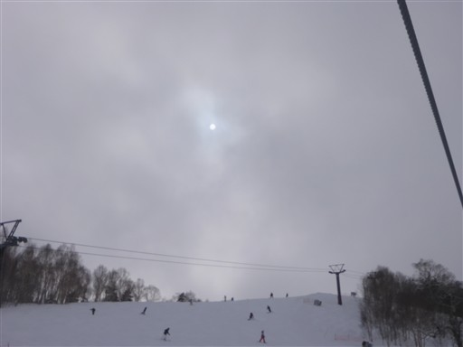
午後になると少し視界が開けてくる。

和田小屋。昼食を求めて入ったが混雑していたので別の場所にする。
以前、苗場山に登った時は、この小屋から歩き始めた。
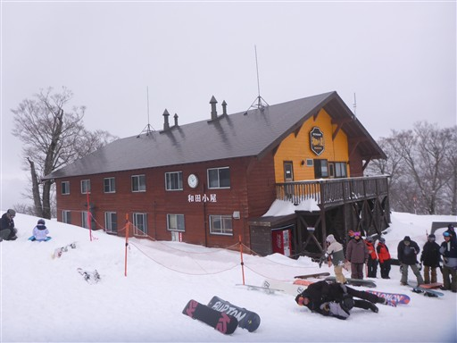
雲に覆われてきて視界が悪くなる。
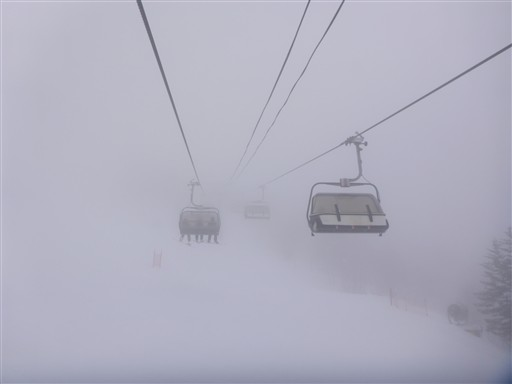
ほとんど何も見えない。さすがにこの視界では滑るのが難しい。
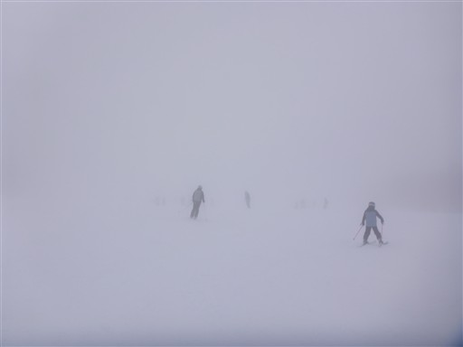
標高を下げて雲の下に出てきた場所で何本か滑る。
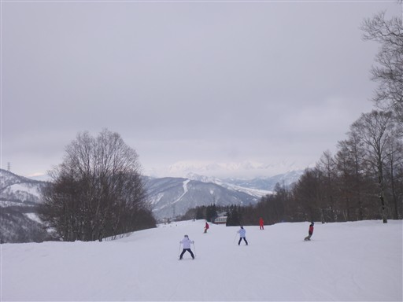
一番下まで滑り降りるルートは閉鎖されており、仕方なく並んでロープウェイで下山。
家から遠く、あまり滑る時間を長く確保できなかったが、
広くて多彩なコースがあり、楽しめたスキー旅行だった。
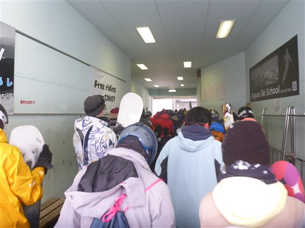